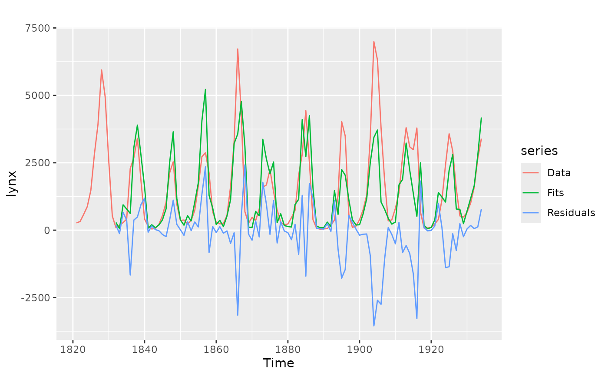
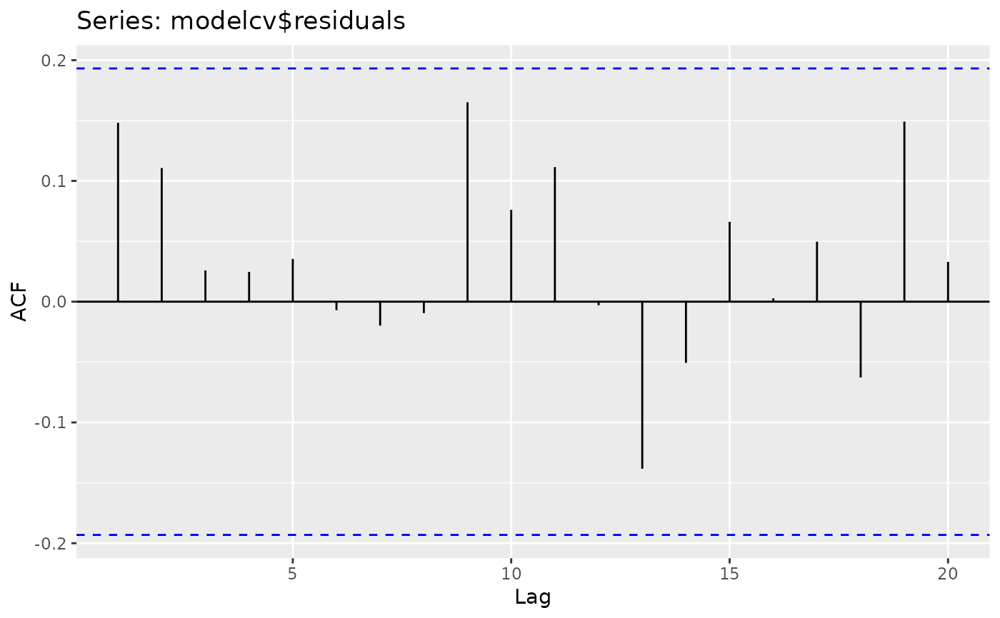

CVar computes the errors obtained by applying an autoregressive
modelling function to subsets of the time series y using k-fold
cross-validation as described in Bergmeir, Hyndman and Koo (2015). It also
applies a Ljung-Box test to the residuals. If this test is significant
(see returned pvalue), there is serial correlation in the residuals and the
model can be considered to be underfitting the data. In this case, the
cross-validated errors can underestimate the generalization error and should
not be used.
Arguments
- y
Univariate time series
- k
Number of folds to use for cross-validation.
- FUN
Function to fit an autoregressive model. Currently, it only works with the
nnetar()function.- cvtrace
Provide progress information.
- blocked
choose folds randomly or as blocks?
- LBlags
lags for the Ljung-Box test, defaults to 24, for yearly series can be set to 20
- ...
Other arguments are passed to
FUN.
Value
A list containing information about the model and accuracy for each fold, plus other summary information computed across folds.
References
Bergmeir, C., Hyndman, R.J., Koo, B. (2018) A note on the validity of cross-validation for evaluating time series prediction. Computational Statistics & Data Analysis, 120, 70-83. https://robjhyndman.com/publications/cv-time-series/.
Examples
modelcv <- CVar(lynx, k = 5, lambda = 0.15)
print(modelcv)
#> Series: lynx
#> Call: CVar(y = lynx, k = 5, lambda = 0.15)
#>
#> 5-fold cross-validation
#> Mean SD
#> ME -61.7601138 336.0087913
#> RMSE 962.3500615 342.0693318
#> MAE 629.6217966 229.9652825
#> MPE -18.6537928 15.6268659
#> MAPE 53.8705735 11.9655705
#> ACF1 0.1697009 0.2299590
#> Theil's U 0.8666704 0.1953902
#>
#> p-value of Ljung-Box test of residuals is 0.4510229
#> if this value is significant (<0.05),
#> the result of the cross-validation should not be used
#> as the model is underfitting the data.
print(modelcv$fold1)
#> $model
#> Series: y
#> Model: NNAR(11,6)
#> Call: FUN(y = y, lambda = 0.15, subset = trainset)
#>
#> Average of 20 networks, each of which is
#> a 11-6-1 network with 79 weights
#> options were - linear output units
#>
#> sigma^2 estimated as 0.07838
#>
#> $accuracy
#> ME RMSE MAE MPE MAPE ACF1 Theil's U
#> Test set -4.287465 838.5006 483.9661 -3.953391 51.16217 -0.1048098 0.6609429
#>
#> $testfit
#> Time Series:
#> Start = 1821
#> End = 1934
#> Frequency = 1
#> [1] NA NA NA NA NA NA
#> [7] NA NA NA NA NA 114.88005
#> [13] 161.67031 299.99623 577.63133 2251.69300 2777.49689 3393.08619
#> [19] 1947.11849 411.48374 159.20947 47.39196 67.71385 210.33139
#> [25] 548.16300 1042.23818 2101.56383 2555.71266 951.68341 360.03759
#> [31] 177.44979 255.43826 219.79217 953.69969 1586.33932 2833.98853
#> [37] 2957.66280 2160.89483 718.89174 284.15376 251.63173 229.93529
#> [43] 528.32011 1590.37655 3217.43455 3769.53585 4154.35548 1515.27075
#> [49] 220.23811 422.76476 363.60317 805.55365 1643.61844 1723.74430
#> [55] 2340.12520 1444.08252 527.16194 288.17935 106.80893 219.68341
#> [61] 443.55591 1005.80080 1053.34109 2879.30256 4359.76615 2587.65542
#> [67] 385.83821 189.95960 87.06765 51.32500 66.62722 190.31618
#> [73] 952.80904 1326.77443 3930.89083 3441.74357 2404.53343 105.31667
#> [79] 155.46760 379.56735 763.49398 1318.84411 3329.13879 6834.73921
#> [85] 6413.63937 3777.99387 1804.79778 361.35506 359.77234 779.64371
#> [91] 1330.91545 2728.45865 3605.71537 3540.38137 2887.53368 3708.91225
#> [97] 685.67440 86.43151 106.37469 109.41606 222.55274 713.39860
#> [103] 1137.22354 2439.92397 3451.65321 2836.75449 1540.68410 727.69908
#> [109] 446.42198 471.73105 701.27828 1623.25263 2655.03288 3352.86223
#>
#> $testset
#> [1] 1 10 15 31 33 34 46 48 49 57 59 62 63 68 69 73 77 94 99
#> [20] 102 108 110 111
#>
library(ggplot2)
autoplot(lynx, series = "Data") +
autolayer(modelcv$testfit, series = "Fits") +
autolayer(modelcv$residuals, series = "Residuals")
#> Warning: Removed 11 rows containing missing values or values outside the scale range
#> (`geom_line()`).
#> Warning: Removed 11 rows containing missing values or values outside the scale range
#> (`geom_line()`).

ggAcf(modelcv$residuals)
